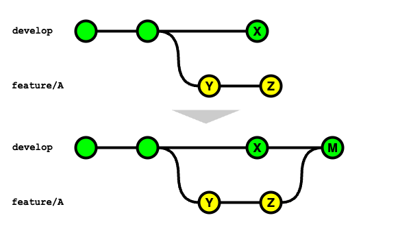
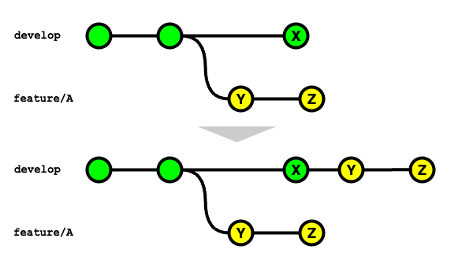
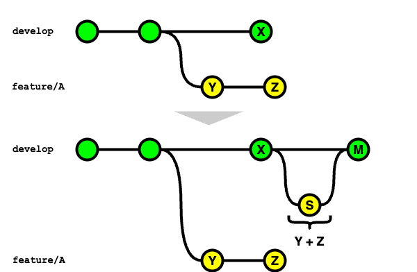

# 開発ブランチに機能ブランチの変更を取り込む方法
# GitHubの場合
プルリクエストを経由して、開発が完了した機能ブランチをメインの開発ブランチに取り込むためには、GitHub（GitLab）上でプルリクエスト（マージリクエスト）を経由する運用を前提とする。
GitHubを利用する場合、開発ブランチに機能ブランチの変更を取り込む方法は3種類ある。
- スカッシュ マージ（Create a merge commit）
- リベース（Rebase and merge）
- スカッシュマージ（Squash and merge）
# 1. マージコミット
動作としては git merge --no-ff コマンドを使用して、機能ブランチの変更を取り込む形になる。
この方法を選択した場合は、下記のとおり、メインの開発ブランチにマージコミットが作成される。

# 2. リベース
動作としては機能ブランチを最新の開発ブランチにリベースした後に、git merge --ff コマンドを使用して、機能ブランチの変更を取り込む形になる。
この方法を選択した場合は、下記のとおり、メインの開発ブランチにマージコミットは作成されず、履歴が一直線になる。

# 3. スカッシュマージ
動作としては git merge --squash コマンドを使用して、機能ブランチの変更を取り込む形になる。
この方法では、機能ブランチで行った変更YとZを1つにまとめたコミットがメインの開発ブランチに作成されます。

# GitLabを利用するの手順
開発ブランチに機能ブランチの変更を取り込む方法は3種類ある。
ただし、マージリクエスト上のオプションによってコミット履歴が変わるため、別途記載する。
- Merge commit
- Merge commit with semi-linear history
- Fast-forward merge
# 1. Merge commit
動作としては、GitHubにおける Create a merge commit と同様のマージ方法になる。
ただし、マージリクエスト上で Squash commits を選択してマージした場合、squash commit と merge commit の2つのコミットが作成されるため注意する。

# マージ方法で Merge commit を選択して、マージリクエスト上で Squash commits オプションを選択してマージした場合
git checkout `git merge-base feature/A develop`
git merge --squash feature/A
SOURCE_SHA=`git rev-parse HEAD`
git checkout develop
git merge --no-ff $SOURCE_SHA
2
3
4
5
6
# 2. Merge commit with semi-linear history
動作としては、前述の Merge commit と同じコマンドを使用して、機能ブランチの変更を取り込む形になる。
この方法を選択した場合は、ソースブランチがターゲットブランチより古い場合はリベースしないとマージできない。
# 3. Fast-forward merge
動作としては、GitHubにおける Rebase and merge と同様のマージ方法になる。
ただし、マージリクエスト上で Squash commits を選択してマージした場合、GitHubにおける Squash and merge と同様のマージ方法になる。